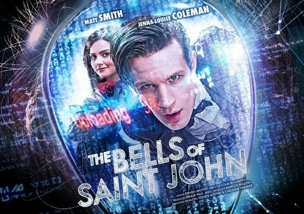

Эра Одиннадцатого Доктора (7 сезон)
<<< НАЗАД ||| 6. Колокола Святого Иоанна ||| ДАЛЬШЕ >>>
или
<<< НАЗАД к мини-эпизодам

MVO [TVShows], [Кириллица], [Baibako], [ВГТРК] или Original [ENG]
Субтитры: Русские {TrueTransLate} или Английские
| Вторая половина 7-го сезона (8 серий) |
The Bells of Saint John
Дата выхода: 30 марта 2013
Формат: 45-минутный эпизод
| Варианты озвучек: | * Разные: смотрите по инструкции |
|---|---|
| Скачивание и просмотр: |
В поисках Клары Освальд Доктор появляется в современном Лондоне, где повсюду Wi-Fi. Человечество живёт в супе из Wi-Fi. Но в сигналах таится что-то опасное, поражающее умы людей и пленяющее их. Пока Клара становится мишенью этой коварной угрозы, Доктор спешит спасти её и весь мир от древнего врага.


Трейлер:
https://youtu.be/Q2FTWhU5TIw